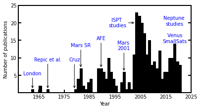
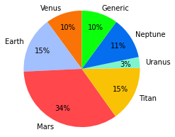
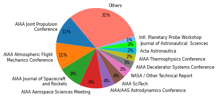
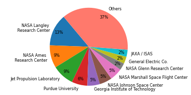
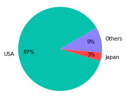
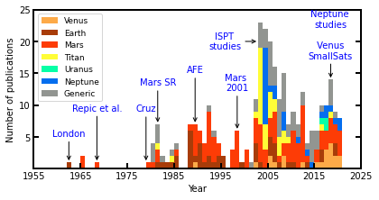
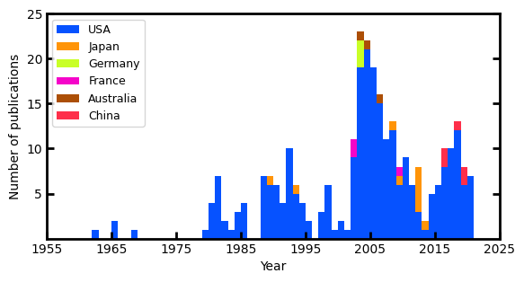

01 - Literature Survey¶
[1]:
import pandas as pd
import numpy as np
from pylab import *
import matplotlib.pyplot as plt
from collections import Counter
from matplotlib import rcParams
[2]:
DATA = pd.read_excel('../bibliometric-data/Bibliometric Data - Mar 12, 2020.xlsx', sheet_name='Sheet1')
years = DATA['Year'].values
origin = DATA['Country of Origin'].values
planet = DATA['Targets'].values
tclass = DATA['Target Class'].values
source = DATA['Journal / Conference / Report'].values
author = DATA['Author Affiliation'].values
sponsor= DATA['Funding Organization'].values
publisher = DATA['Publisher'].values
C:\Users\AthulGirija\anaconda3\envs\env1\lib\site-packages\openpyxl\worksheet\_reader.py:312: UserWarning: Unknown extension is not supported and will be removed
warn(msg)
[3]:
def create_histogramYears():
fig = plt.figure()
fig.set_size_inches([6.25,3.25])
rcParams['font.family'] = 'sans-serif'
rcParams['font.sans-serif'] = ['DejaVu Sans']
params = {'mathtext.default': 'regular' }
plt.rcParams.update(params)
plt.hist(years, bins=np.arange(min(years), max(years)+2, 1), color = "black", ec="black")
plt.xlabel('Year', fontsize=10)
plt.ylabel('Number of publications',fontsize=10);
plt.xticks(np.arange(1955, max(years) + 10, 10))
plt.yticks(np.arange(5, 25 + 1, 5))
plt.xticks(fontsize=10)
plt.yticks(fontsize=10)
ax = plt.gca()
ax.tick_params(direction='in')
ax.yaxis.set_ticks_position('both')
ax.xaxis.set_tick_params(width=2)
ax.yaxis.set_tick_params(width=2)
ax.tick_params(length=6)
for axis in ['top','bottom','left','right']:
ax.spines[axis].set_linewidth(2)
#ax.xaxis.set_ticks_position('both')
plt.annotate("London" , xy=(1962.5, 1), xytext=(1962.5, 5.5), va="center", ha="center", arrowprops=dict(arrowstyle='->, head_width=0.2', facecolor='blue'), fontsize=10,color='blue',bbox=dict(boxstyle='round,pad=0.2', fc='none', ec='none', alpha=0.3))
plt.annotate("Repic et al." , xy=(1968.5, 1), xytext=(1968.5, 9.5), va="center", ha="center", arrowprops=dict(arrowstyle='->, head_width=0.2', facecolor='blue'), fontsize=10,color='blue',bbox=dict(boxstyle='round,pad=0.2', fc='none',ec='none' , alpha=0.3))
plt.annotate("Cruz" , xy=(1979, 1), xytext=(1979,9.4), va="center", ha="center", arrowprops=dict(arrowstyle='->, head_width=0.2', facecolor='blue'), fontsize=10,color='blue',bbox=dict(boxstyle='round,pad=0.2', fc='none', ec='none', alpha=0.3))
plt.annotate("Mars SR" , xy=(1981.5, 7), xytext=(1981.5, 13.5), va="center", ha="center", arrowprops=dict(arrowstyle='->, head_width=0.2', facecolor='blue'), fontsize=10,color='blue',bbox=dict(boxstyle='round,pad=0.2', fc='none', ec='none', alpha=0.3))
plt.annotate("AFE" , xy=(1989.5, 7), xytext=(1989.5, 15.5), va="center", ha="center", arrowprops=dict(arrowstyle='->, head_width=0.2', facecolor='blue'), fontsize=10,color='blue',bbox=dict(boxstyle='round,pad=0.2', fc='none', ec='none', alpha=0.3))
plt.annotate("Mars \n2001" , xy=(1998.5, 6), xytext=(1998.5, 13.5), va="center", ha="center", arrowprops=dict(arrowstyle='->, head_width=0.2', facecolor='blue'), fontsize=10,color='blue',bbox=dict(boxstyle='round,pad=0.2', fc='none', ec='none', alpha=0.3))
plt.annotate("ISPT \nstudies" , xy=(2003, 20), xytext=(1996, 20), va="center", ha="center", arrowprops=dict(arrowstyle='->, head_width=0.2', facecolor='blue'), fontsize=10,color='blue',bbox=dict(boxstyle='round,pad=0.2', fc='none', ec='none', alpha=0.3))
plt.annotate("Neptune \nstudies\n\n Venus \nSmallSats" , xy=(2018.5, 10), xytext=(2018.5, 18), va="center", ha="center", arrowprops=dict(arrowstyle='->, head_width=0.2', facecolor='blue'), fontsize=10,color='blue',bbox=dict(boxstyle='round,pad=0.2', fc='none', ec='none', alpha=0.3))
plt.xlim([1957, 2025])
#plt.annotate("PSD assessment \n\nIce Giants\n study \n\nVenus SmallSat \nstudy" , xy=(2017, 10), xytext=(2017, 18), va="center", ha="center", arrowprops=dict(arrowstyle='->, head_width=0.2', facecolor='blue'), fontsize=10,color='blue',bbox=dict(boxstyle='round,pad=0.2', fc='none', ec='none', alpha=0.3))
'''
plt.annotate("In-Space Propulsion (ISP) \n funded sudies" , xy=(2003, 20), xytext=(1992, 20), va="center", ha="center", arrowprops=dict(width=1.0, facecolor='blue', edgecolor='blue', shrink=0.05), fontsize=10,color='blue',bbox=dict(boxstyle='round,pad=0.2', fc='yellow', alpha=0.3))
plt.annotate("PSD Aerocapture \nAssessment \n\nIce Giants\n Aerocapture Study \n\nVenus SmallSat \nAerocapture Study" , xy=(2017, 10), xytext=(2017, 18), va="center", ha="center", arrowprops=dict(width=1.0, facecolor='blue', edgecolor='blue', shrink=0.05), fontsize=10,color='blue',bbox=dict(boxstyle='round,pad=0.2', fc='yellow', alpha=0.3))
'''
plt.savefig('../plots/publication-no-hist-new.png',bbox_inches='tight')
plt.savefig('../plots/publication-no-hist-new.pdf', dpi=300,bbox_inches='tight')
plt.savefig('../plots/publication-no-hist-new.eps', dpi=300,bbox_inches='tight')
plt.show()
[4]:
create_histogramYears()

[5]:
def create_pieTargetPlanet():
v_c = sum('Venus' in s for s in planet)
e_c = sum('Earth' in s for s in planet)
m_c = sum('Mars' in s for s in planet)
t_c = sum('Titan' in s for s in planet)
u_c = sum('Uranus' in s for s in planet)
n_c = sum('Neptune' in s for s in planet)
g_c = sum('Generic' in s for s in planet)
sizes = [v_c, e_c, m_c, t_c, u_c, n_c, g_c]
labels = ['Venus', 'Earth', 'Mars', 'Titan', 'Uranus', 'Neptune', 'Generic']
fig=plt.figure(figsize=(3.25,3.25))
rcParams['font.family'] = 'sans-serif'
rcParams['font.sans-serif'] = ['DejaVu Sans']
params = {'mathtext.default': 'regular' }
plt.rcParams.update(params)
colors = ['xkcd:orange', 'xkcd:pastel blue', 'xkcd:light red', 'xkcd:goldenrod', 'xkcd:light turquoise', 'xkcd:cerulean blue', 'xkcd:neon green']
patches, texts, autotexts = plt.pie(sizes, labels=labels, colors = colors, autopct='%d%%', pctdistance = 0.75, shadow=False, startangle=90, textprops={'fontsize': 10})
plt.axis('equal') # Equal aspect ratio ensures that pie is drawn as a circle.
plt.setp(autotexts, fontsize=10)
plt.setp(texts, fontsize=10)
plt.savefig('../plots/pie-planets.png',bbox_inches='tight')
plt.savefig('../plots/pie-planets.pdf', dpi=500,bbox_inches='tight')
plt.savefig('../plots/pie-planets.eps', dpi=500,bbox_inches='tight')
plt.show()
[6]:
create_pieTargetPlanet()
C:\Users\ATHULG~1\AppData\Local\Temp/ipykernel_82784/4008509295.py:3: DeprecationWarning: Calling np.sum(generator) is deprecated, and in the future will give a different result. Use np.sum(np.fromiter(generator)) or the python sum builtin instead.
v_c = sum('Venus' in s for s in planet)
C:\Users\ATHULG~1\AppData\Local\Temp/ipykernel_82784/4008509295.py:4: DeprecationWarning: Calling np.sum(generator) is deprecated, and in the future will give a different result. Use np.sum(np.fromiter(generator)) or the python sum builtin instead.
e_c = sum('Earth' in s for s in planet)
C:\Users\ATHULG~1\AppData\Local\Temp/ipykernel_82784/4008509295.py:5: DeprecationWarning: Calling np.sum(generator) is deprecated, and in the future will give a different result. Use np.sum(np.fromiter(generator)) or the python sum builtin instead.
m_c = sum('Mars' in s for s in planet)
C:\Users\ATHULG~1\AppData\Local\Temp/ipykernel_82784/4008509295.py:6: DeprecationWarning: Calling np.sum(generator) is deprecated, and in the future will give a different result. Use np.sum(np.fromiter(generator)) or the python sum builtin instead.
t_c = sum('Titan' in s for s in planet)
C:\Users\ATHULG~1\AppData\Local\Temp/ipykernel_82784/4008509295.py:7: DeprecationWarning: Calling np.sum(generator) is deprecated, and in the future will give a different result. Use np.sum(np.fromiter(generator)) or the python sum builtin instead.
u_c = sum('Uranus' in s for s in planet)
C:\Users\ATHULG~1\AppData\Local\Temp/ipykernel_82784/4008509295.py:8: DeprecationWarning: Calling np.sum(generator) is deprecated, and in the future will give a different result. Use np.sum(np.fromiter(generator)) or the python sum builtin instead.
n_c = sum('Neptune' in s for s in planet)
C:\Users\ATHULG~1\AppData\Local\Temp/ipykernel_82784/4008509295.py:9: DeprecationWarning: Calling np.sum(generator) is deprecated, and in the future will give a different result. Use np.sum(np.fromiter(generator)) or the python sum builtin instead.
g_c = sum('Generic' in s for s in planet)

[7]:
def create_pieSource():
counter = Counter(source)
sizes = counter.values()
labels = counter.keys()
tot = len(years)
JPC = counter['AIAA/ASME/SAE/ASEE Joint Propulsion Conference']
AFM = counter['Atmospheric Flight Mechanics Conference']
JSR = counter['Journal of Spacecraft and Rockets']
ASM = counter['Aerospace Sciences Meeting']
AAS = counter['AIAA/AAS Astrodynamics Conference']
NTM = counter['Technical Report'] + 6
DTC = counter['AIAA Aerodynamic Decelerator Systems Technology Conference']
TPC = counter['Thermophysics Conference']
AAJ = counter['Acta Astronautica']
JAS = counter['Journal of Astronautical Sciences']
SCI = counter['AIAA SciTech']
IPW = counter['International Planetary Probe Workshop']
MIS = len(source) - JSR - AFM - JPC - AAS - ASM - NTM - DTC - TPC - AAJ - JAS - SCI - IPW
sizes = [JPC, AFM, JSR , ASM, AAS, SCI, NTM, DTC, TPC, AAJ, JAS, IPW, MIS]
labels = ['AIAA Joint Propulsion\n Conference',
'AIAA Atmospheric Flight\n Mechanics Conference',
'AIAA Journal of Spacecraft \n and Rockets',
'AIAA Aerospace Sciences Meeting',
'AIAA/AAS Astrodynamics Conference',
'AIAA SciTech',
'NASA / Other Technical Report',
'AIAA Decelerator Systems Conference',
'AIAA Thermophysics Conference',
'Acta Astronautica',
'Journal of Astronautical Sciences',
'Intl. Planetary Probe Workshop',
'Others']
fig=plt.figure(figsize=(6.25, 3.25))
rcParams['font.family'] = 'sans-serif'
rcParams['font.sans-serif'] = ['DejaVu Sans']
params = {'mathtext.default': 'regular' }
plt.rcParams.update(params)
colors = ["#1f77b4", "#ff7f0e", "#2ca02c", "#d62728", "#9467bd", "#8c564b", "#e377c2", "#7f7f7f", "#bcbd22", "#17becf", 'xkcd:neon green', 'xkcd:sky blue', 'xkcd:salmon']
patches, texts, autotexts = plt.pie(sizes, labels=labels, colors = colors, labeldistance = 1.1 , pctdistance = 0.85, autopct='%d%%',shadow=False, startangle=130, textprops={'fontsize': 8})
plt.axis('equal') # Equal aspect ratio ensures that pie is drawn as a circle.
plt.setp(autotexts, fontsize=8)
plt.setp(texts, fontsize=8)
plt.savefig('../plots/pie-sources.png',bbox_inches='tight')
plt.savefig('../plots/pie-sources.pdf', dpi=500,bbox_inches='tight')
plt.savefig('../plots/pie-sources.eps', dpi=500,bbox_inches='tight')
plt.show()
[8]:
create_pieSource()

[9]:
def create_pieInstitution():
counter = Counter(author)
sizes = counter.values()
labels = counter.keys()
tot = len(years)
LANG = counter['NASA Langley Research Center']
AMES = counter['NASA Ames Research Center']
JPL = counter['Jet Propulsion Lab']
PURD = counter['Purdue University']
GEOR = counter['Georgia Institute of Technology']
JOHN = counter['NASA Johnson Space Center']
MARS = counter['NASA Marshall Space Flight Center']
GLEN = counter['NASA Glenn Research Center']
GECO = counter['General Electric Co.']
JAXA = counter['Japanese Aerospace and Exploration Agency (JAXA)'] + 4
MIS = len(source) - LANG - AMES - JPL - PURD - GEOR - JOHN - MARS - GLEN - GECO - JAXA
sizes = [LANG, AMES, JPL, PURD, GEOR, JOHN, MARS, GLEN, GECO, JAXA, MIS ]
labels = ['NASA Langley \n Research Center',
'NASA Ames \nResearch Center',
'Jet Propulsion Laboratory',
'Purdue University',
'Georgia Institute of Technology',
'NASA Johnson Space Center',
'NASA Marshall Space Flight Center',
'NASA Glenn Research Center',
'General Electric Co.',
'JAXA / ISAS',
'Others']
fig=plt.figure(figsize=(6.25, 3.25))
rcParams['font.family'] = 'sans-serif'
rcParams['font.sans-serif'] = ['DejaVu Sans']
params = {'mathtext.default': 'regular' }
plt.rcParams.update(params)
colors = ["#1f77b4", "#ff7f0e", "#2ca02c", "#d62728", "#9467bd", "#8c564b", "#e377c2", "#7f7f7f", "#bcbd22", "#17becf", 'xkcd:salmon']
patches, texts, autotexts = plt.pie(sizes, labels=labels, colors = colors, labeldistance = 1.1 , pctdistance = 0.85, autopct='%d%%',shadow=False, startangle=130, textprops={'fontsize': 8})
plt.axis('equal') # Equal aspect ratio ensures that pie is drawn as a circle.
plt.setp(autotexts, fontsize=8)
plt.setp(texts, fontsize=8)
plt.savefig('../plots/pie-affiliation.png',bbox_inches='tight')
plt.savefig('../plots/pie-affiliation.pdf', dpi=500,bbox_inches='tight')
plt.savefig('../plots/pie-affiliation.eps', dpi=500,bbox_inches='tight')
plt.show()
[10]:
create_pieInstitution()

[11]:
def create_pieCountry():
counter = Counter(origin)
sizes = counter.values()
labels = counter.keys()
tot = len(years)
US = counter['USA']
JP = counter['Japan']
MIS = len(source) - US - JP
sizes = [US, JP, MIS ]
labels = ['USA',
'Japan',
'Others']
fig=plt.figure(figsize=(3.25, 3.25))
rcParams['font.family'] = 'sans-serif'
rcParams['font.sans-serif'] = ['DejaVu Sans']
params = {'mathtext.default': 'regular' }
plt.rcParams.update(params)
colors = ['xkcd:turquoise', 'xkcd:light red', 'xkcd:periwinkle']
patches, texts, autotexts = plt.pie(sizes, labels=labels, colors = colors, labeldistance = 1.1 , pctdistance = 0.75, autopct='%d%%',shadow=False, startangle=30, textprops={'fontsize': 10})
plt.axis('equal') # Equal aspect ratio ensures that pie is drawn as a circle.
plt.setp(autotexts, fontsize=10)
plt.setp(texts, fontsize=10)
plt.savefig('../plots/pie-country.png',bbox_inches='tight')
plt.savefig('../plots/pie-country.pdf', dpi=500,bbox_inches='tight')
plt.savefig('../plots/pie-country.eps', dpi=500,bbox_inches='tight')
plt.show()
[12]:
create_pieCountry()

[13]:
def create_histogramYearsStackedByPlanetGroup():
years = DATA['Year'].values
years_ve = years
years_ea = years
years_ma = years
years_ti = years
years_ur = years
years_ne = years
years_ge = years
years_ju = years
years_sa = years
ve_index_to_remove=np.array([0])
ea_index_to_remove=np.array([0])
ma_index_to_remove=np.array([0])
ti_index_to_remove=np.array([0])
ur_index_to_remove=np.array([0])
ne_index_to_remove=np.array([0])
ge_index_to_remove=np.array([0])
ju_index_to_remove=np.array([0])
sa_index_to_remove=np.array([0])
for i in range(0,len(years)):
if tclass[i] != 'Venus':
ve_index_to_remove=np.append(ve_index_to_remove,i)
for i in range(0,len(years)):
if tclass[i] != 'Earth':
ea_index_to_remove=np.append(ea_index_to_remove,i)
for i in range(0,len(years)):
if tclass[i] != 'Mars':
ma_index_to_remove=np.append(ma_index_to_remove,i)
for i in range(0,len(years)):
if tclass[i] != 'Titan':
ti_index_to_remove=np.append(ti_index_to_remove,i)
for i in range(0,len(years)):
if tclass[i] != 'Uranus':
ur_index_to_remove=np.append(ur_index_to_remove,i)
for i in range(0,len(years)):
if tclass[i] != 'Neptune':
ne_index_to_remove=np.append(ne_index_to_remove,i)
for i in range(0,len(years)):
if tclass[i] != 'Generic':
ge_index_to_remove=np.append(ge_index_to_remove,i)
'''
for i in range(0,len(years)):
if tclass[i] != 'Jupiter':
ju_index_to_remove=np.append(ju_index_to_remove,i)
for i in range(0,len(years)):
if tclass[i] != 'Saturn':
sa_index_to_remove=np.append(sa_index_to_remove,i)
'''
ve_index_to_remove=np.delete(ve_index_to_remove,0)
ea_index_to_remove=np.delete(ea_index_to_remove,0)
ma_index_to_remove=np.delete(ma_index_to_remove,0)
ti_index_to_remove=np.delete(ti_index_to_remove,0)
ur_index_to_remove=np.delete(ur_index_to_remove,0)
ne_index_to_remove=np.delete(ne_index_to_remove,0)
ge_index_to_remove=np.delete(ge_index_to_remove,0)
#ju_index_to_remove=np.delete(ju_index_to_remove,0)
#sa_index_to_remove=np.delete(sa_index_to_remove,0)
years_ve = np.delete(years_ve, ve_index_to_remove)
years_ea = np.delete(years_ea, ea_index_to_remove)
years_ma = np.delete(years_ma, ma_index_to_remove)
years_ti = np.delete(years_ti, ti_index_to_remove)
years_ur = np.delete(years_ur, ur_index_to_remove)
years_ne = np.delete(years_ne, ne_index_to_remove)
years_ge = np.delete(years_ge, ge_index_to_remove)
#years_ju = np.delete(years_ju, ju_index_to_remove)
#years_sa = np.delete(years_sa, sa_index_to_remove)
#years_st = [years_ve, years_ea, years_ma, years_ju, years_sa, years_ti, years_ur, years_ne, years_ge]
years_st = [years_ve, years_ea, years_ma, years_ti, years_ur, years_ne, years_ge]
fig=plt.figure(figsize=(6.5,3.25))
rcParams['font.family'] = 'sans-serif'
rcParams['font.sans-serif'] = ['DejaVu Sans']
params = {'mathtext.default': 'regular' }
plt.rcParams.update(params)
plt.style.use('dark_background')
plt.rcParams.update(plt.rcParamsDefault)
colors = ['xkcd:light orange', 'xkcd:rust', 'xkcd:red orange', 'xkcd:sunshine yellow', 'xkcd:bright sea green', 'xkcd:cerulean blue', 'xkcd:grey']
plt.hist(years_st, bins=np.arange(min(years), max(years)+2, 1), stacked=True, label=['Venus', 'Earth', 'Mars','Titan', 'Uranus', 'Neptune', 'Generic'],color=colors)
plt.xlabel('Year', fontsize=10)
plt.ylabel('Number of publications',fontsize=10);
plt.xticks(np.arange(1955, max(years) + 10, 10))
plt.yticks(np.arange(5, 25 + 1, 5))
plt.xticks(fontsize=10)
plt.yticks(fontsize=10)
ax = plt.gca()
ax.tick_params(direction='in')
ax.yaxis.set_ticks_position('both')
plt.annotate("London" , xy=(1962.5, 1), xytext=(1962.5, 5.5), va="center", ha="center", arrowprops=dict(arrowstyle='->, head_width=0.2', facecolor='blue'), fontsize=10,color='blue',bbox=dict(boxstyle='round,pad=0.2', fc='none', ec='none', alpha=0.3))
plt.annotate("Repic et al." , xy=(1968.5, 1), xytext=(1968.5, 9.5), va="center", ha="center", arrowprops=dict(arrowstyle='->, head_width=0.2', facecolor='blue'), fontsize=10,color='blue',bbox=dict(boxstyle='round,pad=0.2', fc='none',ec='none' , alpha=0.3))
plt.annotate("Cruz" , xy=(1979, 1), xytext=(1979,9.4), va="center", ha="center", arrowprops=dict(arrowstyle='->, head_width=0.2', facecolor='blue'), fontsize=10,color='blue',bbox=dict(boxstyle='round,pad=0.2', fc='none', ec='none', alpha=0.3))
plt.annotate("Mars SR" , xy=(1981.5, 7), xytext=(1981.5, 13.5), va="center", ha="center", arrowprops=dict(arrowstyle='->, head_width=0.2', facecolor='blue'), fontsize=10,color='blue',bbox=dict(boxstyle='round,pad=0.2', fc='none', ec='none', alpha=0.3))
plt.annotate("AFE" , xy=(1989.5, 7), xytext=(1989.5, 15.5), va="center", ha="center", arrowprops=dict(arrowstyle='->, head_width=0.2', facecolor='blue'), fontsize=10,color='blue',bbox=dict(boxstyle='round,pad=0.2', fc='none', ec='none', alpha=0.3))
plt.annotate("Mars \n2001" , xy=(1998.5, 6), xytext=(1998.5, 13.5), va="center", ha="center", arrowprops=dict(arrowstyle='->, head_width=0.2', facecolor='blue'), fontsize=10,color='blue',bbox=dict(boxstyle='round,pad=0.2', fc='none', ec='none', alpha=0.3))
plt.annotate("ISPT \nstudies" , xy=(2003, 20), xytext=(1996, 20), va="center", ha="center", arrowprops=dict(arrowstyle='->, head_width=0.2', facecolor='blue'), fontsize=10,color='blue',bbox=dict(boxstyle='round,pad=0.2', fc='none', ec='none', alpha=0.3))
plt.annotate("Neptune \nstudies\n\n Venus \nSmallSats" , xy=(2018.5, 14), xytext=(2018.5, 21), va="center", ha="center", arrowprops=dict(arrowstyle='->, head_width=0.2', facecolor='blue'), fontsize=10,color='blue',bbox=dict(boxstyle='round,pad=0.2', fc='none', ec='none', alpha=0.3))
#plt.xlim([1958,2027])
#plt.annotate("Neptune aerocapture studies \n (Lockwood et al., 2006)" , xy=(2004.5, 15.0), xytext=(1988, 15.0), va="center", ha="center", arrowprops=dict(width=0.3, facecolor='black', edgecolor='black', shrink=0.05, headwidth=4.0), fontsize=9,color='black',bbox=dict(boxstyle='round,pad=0.2', fc='none',ec='none', alpha=0.3))
#plt.annotate("PSD assessment \n (Spilker et al., 2016) \n \n Aerocapture \n assessment \n (Saikia et al., 2016)" , xy=(2017.5, 8.6), xytext=(2017.5, 18.0), va="center", ha="center", arrowprops=dict(width=0.3, facecolor='black', edgecolor='black', shrink=0.05, headwidth=4.0), fontsize=9,color='black',bbox=dict(boxstyle='round,pad=0.2', fc='none',ec='none', alpha=0.3))
ax = plt.gca()
ax.tick_params(direction='in')
plt.legend(loc='upper left', fontsize=9)
ax.xaxis.set_tick_params(width=2)
ax.yaxis.set_tick_params(width=2)
ax.tick_params(length=6)
for axis in ['top','bottom','left','right']:
ax.spines[axis].set_linewidth(2)
plt.savefig('../plots/hist-byPlanet-new.png',bbox_inches='tight')
plt.savefig('../plots/hist-byPlanet-new.pdf', dpi=500,bbox_inches='tight')
plt.savefig('../plots/hist-byPlanet-new.eps', dpi=500,bbox_inches='tight')
plt.show()
[14]:
create_histogramYearsStackedByPlanetGroup()
The PostScript backend does not support transparency; partially transparent artists will be rendered opaque.
The PostScript backend does not support transparency; partially transparent artists will be rendered opaque.

[15]:
def create_histogramYearsStackedByCountry():
years = DATA['Year'].values
years_us = years
years_jp = years
years_ru = years
years_de = years
years_fr = years
years_au = years
years_ca = years
years_in = years
years_it = years
years_nl = years
years_sk = years
years_sp = years
years_sv = years
years_cn = years
us_index_to_remove=np.array([0])
jp_index_to_remove=np.array([0])
ru_index_to_remove=np.array([0])
de_index_to_remove=np.array([0])
fr_index_to_remove=np.array([0])
au_index_to_remove=np.array([0])
ca_index_to_remove=np.array([0])
in_index_to_remove=np.array([0])
it_index_to_remove=np.array([0])
nl_index_to_remove=np.array([0])
sk_index_to_remove=np.array([0])
sp_index_to_remove=np.array([0])
sv_index_to_remove=np.array([0])
cn_index_to_remove=np.array([0])
for i in range(0,len(years)):
if origin[i] != 'USA':
us_index_to_remove=np.append(us_index_to_remove,i)
for i in range(0,len(years)):
if origin[i] != 'Japan':
jp_index_to_remove=np.append(jp_index_to_remove,i)
for i in range(0,len(years)):
if origin[i] != 'Russia':
ru_index_to_remove=np.append(ru_index_to_remove,i)
for i in range(0,len(years)):
if origin[i] != 'Germany':
de_index_to_remove=np.append(de_index_to_remove,i)
for i in range(0,len(years)):
if origin[i] != 'France':
fr_index_to_remove=np.append(fr_index_to_remove,i)
for i in range(0,len(years)):
if origin[i] != 'Australia':
au_index_to_remove=np.append(au_index_to_remove,i)
for i in range(0,len(years)):
if origin[i] != 'Canada':
ca_index_to_remove=np.append(ca_index_to_remove,i)
for i in range(0,len(years)):
if origin[i] != 'India':
in_index_to_remove=np.append(in_index_to_remove,i)
for i in range(0,len(years)):
if origin[i] != 'Italy':
it_index_to_remove=np.append(it_index_to_remove,i)
for i in range(0,len(years)):
if origin[i] != 'Netherlands':
nl_index_to_remove=np.append(nl_index_to_remove,i)
for i in range(0,len(years)):
if origin[i] != 'S. Korea':
sk_index_to_remove=np.append(sk_index_to_remove,i)
for i in range(0,len(years)):
if origin[i] != 'Spain':
sp_index_to_remove=np.append(sp_index_to_remove,i)
for i in range(0,len(years)):
if origin[i] != 'Sweden':
sv_index_to_remove=np.append(sv_index_to_remove,i)
for i in range(0,len(years)):
if origin[i] != 'China':
cn_index_to_remove=np.append(cn_index_to_remove,i)
us_index_to_remove=np.delete(us_index_to_remove,0)
jp_index_to_remove=np.delete(jp_index_to_remove,0)
ru_index_to_remove=np.delete(ru_index_to_remove,0)
de_index_to_remove=np.delete(de_index_to_remove,0)
fr_index_to_remove=np.delete(fr_index_to_remove,0)
au_index_to_remove=np.delete(au_index_to_remove,0)
ca_index_to_remove=np.delete(ca_index_to_remove,0)
in_index_to_remove=np.delete(in_index_to_remove,0)
it_index_to_remove=np.delete(it_index_to_remove,0)
nl_index_to_remove=np.delete(nl_index_to_remove,0)
sk_index_to_remove=np.delete(sk_index_to_remove,0)
sp_index_to_remove=np.delete(sp_index_to_remove,0)
sv_index_to_remove=np.delete(sv_index_to_remove,0)
cn_index_to_remove=np.delete(cn_index_to_remove,0)
years_us = np.delete(years_us, us_index_to_remove)
years_jp = np.delete(years_jp, jp_index_to_remove)
years_ru = np.delete(years_ru, ru_index_to_remove)
years_de = np.delete(years_de, de_index_to_remove)
years_fr = np.delete(years_fr, fr_index_to_remove)
years_au = np.delete(years_au, au_index_to_remove)
years_ca = np.delete(years_ca, ca_index_to_remove)
years_in = np.delete(years_in, in_index_to_remove)
years_it = np.delete(years_it, it_index_to_remove)
years_nl = np.delete(years_nl, nl_index_to_remove)
years_sk = np.delete(years_sk, sk_index_to_remove)
years_sp = np.delete(years_sp, sp_index_to_remove)
years_sv = np.delete(years_sv, sv_index_to_remove)
years_cn = np.delete(years_cn, cn_index_to_remove)
years_st = [years_us, years_jp, years_de, years_fr, years_au, years_cn]
fig=plt.figure(figsize=(6.5,3.25))
rcParams['font.family'] = 'sans-serif'
rcParams['font.sans-serif'] = ['DejaVu Sans']
params = {'mathtext.default': 'regular' }
plt.rcParams.update(params)
plt.style.use('dark_background')
plt.rcParams.update(plt.rcParamsDefault)
colors = ['xkcd:electric blue', 'xkcd:tangerine', 'xkcd:green yellow', 'xkcd:hot magenta', 'xkcd:cinnamon', 'xkcd:lightish red']
plt.hist(years_st, bins=np.arange(min(years), max(years)+2, 1), stacked=True, label=['USA', 'Japan', 'Germany', 'France', 'Australia', 'China'],color=colors)
plt.xlabel('Year', fontsize=10)
plt.ylabel('Number of publications',fontsize=10);
plt.xticks(np.arange(1955, max(years) + 10, 10))
plt.yticks(np.arange(5, 25 + 1, 5))
plt.xticks(fontsize=10)
plt.yticks(fontsize=10)
ax = plt.gca()
ax.tick_params(direction='in')
ax.yaxis.set_ticks_position('both')
ax.xaxis.set_tick_params(width=2)
ax.yaxis.set_tick_params(width=2)
ax.tick_params(length=6)
for axis in ['top','bottom','left','right']:
ax.spines[axis].set_linewidth(2)
plt.legend(loc='upper left', fontsize=9)
plt.savefig('../plots/hist-byCountry-new.png',bbox_inches='tight')
plt.savefig('../plots/hist-byCountry-new.pdf', dpi=500,bbox_inches='tight')
plt.savefig('../plots/hist-byCountry-new.eps', dpi=500,bbox_inches='tight')
plt.show()
[16]:
create_histogramYearsStackedByCountry()
The PostScript backend does not support transparency; partially transparent artists will be rendered opaque.
The PostScript backend does not support transparency; partially transparent artists will be rendered opaque.

[ ]: